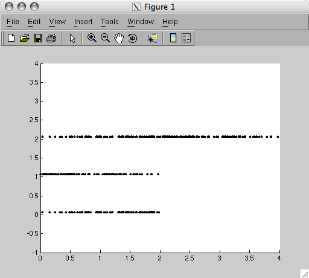
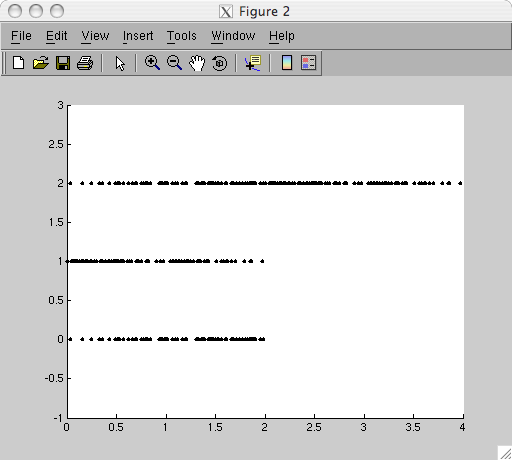

Configuring toolbox addressingMapping spike trainsMultiplexing spike trainsStimulating and monitoring a chip
Configuring toolbox addressingMapping spike trainsMultiplexing spike trainsStimulating and monitoring a chip| Spike Toolbox |
Spike Toolbox tutorial
Stimulating a chip
Configuring toolbox addressingMapping spike trainsMultiplexing spike trainsStimulating and monitoring a chip
Configuring toolbox addressing
The Spike Toolbox allows arbitrary addressing schemes to be used, to accommodate any external device that uses a spike-based communication system. This is a complex topic, and is covered in more detail elsewhere:
Several utility functions are provided by the toolbox to ease the address configuration process. See the function index for a list of these functions. STAddrSpecIgnoreNeuronSynapse is one such utility function; this function constructs an addressing specification for a binary address with three fields: a number of ignored bits, a number of bits for the neuron address and a number of bits for the synapse address, in least- to most-significant order.
[stasSpecification] = STAddrSpecIgnoreNeuronSynapse(nIgnoreBits, nNeuronBits, nSynapseBits)
Here we will adopt a simple addressing scheme, with a four-bit synapse and a four-bit neuron address. The neuron address will be least significant. STDescribe is also able to examine addressing specification toolbox objects.
stasAddr = STAddrSpecIgnoreNeuronSynapse(0, 4, 4);
STDescribe(stasAddr);
--- Spike toolbox version [0.03]
--- STIsValidSpikeTrain: No spike train level exists
This is an addressing specification:
|(7) Synapse address (4)|(3) Neuron address (0)|
We can now map our spike trains to neuron and synapse addresses based on this addressing scheme.
Mapping spike trains
The STMap function is used to add addressing information to an instantiated spike train. It will attach a spike train mapping to an instantiated train. The addressing scheme is either provided as an argument to the function, or the default scheme is taken from the toolbox options.
[stTrain] = STMap(stInstantiatedTrain, nAddr1, nAddr2, ...)
[stTrain] = STMap(stInstantiatedTrain, stasAddressingSpecifcation, nAddr1, nAddr2, ...)
Address arguments are always provided from least to most significant field. In our case, the neuron address will precede the synapse address. We will map our three spike trains to neurons 0..2, synapse 1 on each neuron.
stRising = STMap(stRising, 0, 1, stasAddr);
stFalling = STMap(stFalling, 1, 1, stasAddr);
stLonger = STMap(stLonger, 2, 1, stasAddr);
Note that stasAddr, the addressing specification, can come anywhere in the addressing list. Let's use STDescribe one more time to look at our spike train objects:
STDescribe(stRising);
--- Spike toolbox version [0.03]
This is a mapped spike train:
Addressing format: |(7) Synapse address (4)|(3) Neuron address (0)|
Address indices: [0] [1] (Logical address [0.0625])
Duration [2.00] seconds
This train contains a definition:
Linear frequency change spike train
Start freq [10.00] Hz ==> End freq [100.00] Hz
STDescribe(stLonger);
--- Spike toolbox version [0.03]
This is a mapped spike train:
Addressing format: |(7) Synapse address (4)|(3) Neuron address (0)|
Address indices: [2] [1] (Logical address [2.0625])
Using chunked mode encoding
Duration [4.00] seconds
Multiplexing spike trains
The spike toolbox can only use a single spike train object for stimulating a physical device. However, the STMultiplex function trivially multiplexes two or more spike trains together in time, preserving addressing information, and returns a single spike train object that can be used for stimulation.
[stMuxTrain] = STMultiplex(stTrain1, stTrain2, ...)
[stMuxTrain] = STMultiplex(strLevel, stTrain1, stTrain2, ...)
[stMuxTrain] = STMultiplex(stTrainCell)
[stMuxTrain] = STMultiplex(strLevel, stTrainCell)
Lets multiplex our three spike trains together. Note that when multiplexing a group of spike trains, we can pass the trains to STMultiplex either as a list of arguments, or as a cell array. After multiplexing, we'll use STPlotRaster to examine the resulting train.
stMux = STMultiplex(stRising, stFalling, stLonger);
STPlotRaster(stMux);

Note that as before, the spike address is along the y-axis. On raster plots of multiplexed trains, the logical address is used for each spike train. This is a decimal representation of each synapse and neuron address. See Understanding addressing configurations for more information about logical and physical addresses. The calls to STDescribe above listed the logical addresses for each spike train. Examine the addresses we used for mapping the trains and note the relationship to the logical addresses.
Stimulating and monitoring a chip
Note: This section of the tutorial uses PCI-AER hardware to stimulate an external physical device. The toolbox will function without this hardware; feel free to skip this bit.
Now we have our stimulus spike train, we can use the STStimulate function to send the train to a chip over the PCI-AER stimulation system. STStimulate will optionally monitor events on the AER bus.
[stMonTrain] = STStimulate(stTrain)
[stMonTrain] = STStimulate(stTrain, tMonDuration)
stMonitored = STStimulate(stMux, 10);
stMonitored now contains the spikes seen on the AER bus during the ten second monitoring period.
STPlotRaster(stMonitored);

| Combining the trains | Analysing the received spikes |